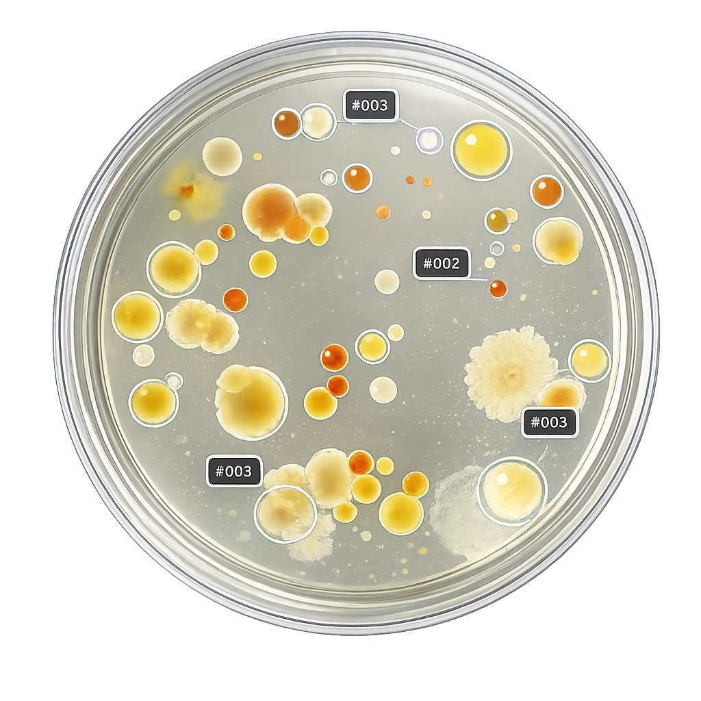

Drop the image in
Drag a JPG, PNG, or TIFF from your microscope, phone, or scanner into the window. Or process a whole folder at once with batch mode.
- Formats
- JPG · PNG · TIFF · BMP
- Mode
- Single · Batch
- Max size
- 16K × 16K
Drop in a phone photo. Petrilya finds every colony, gives you the count, and exports a clean report. Open-source desktop app. No code, no cloud, no GPU required.

Three clicks from a photo on your phone to a report on your director's desk.
Drag a JPG, PNG, or TIFF from your microscope, phone, or scanner into the window. Or process a whole folder at once with batch mode.
Cellpose under the hood. Pretrained models segment every colony, no settings to tweak. Each one gets an ID, area, diameter, eccentricity.
One-page PDF with preview, histogram, and table. CSV for spreadsheets. JSON manifest with SHA-256 and parameters for reproducibility.
Powered by Cellpose under the hood. Pretrained models recognise colonies of different shapes and sizes without any setup or parameter tuning.
Drop a JPG, PNG, or TIFF straight from your phone or microscope.
Erase misdetections with a click, paint missed colonies with a brush.
Wheel-zoom anywhere, Space-drag to pan, F to fit.
Set micrometers-per-pixel and your areas come out in µm², diameters in µm — drop them straight into your methods section.
One-page PDF with preview, histogram, table. CSV. JSON manifest.
Point at a folder, get a CSV, PDF and JSON per image plus a sweeping summary.csv. Walk away while it works.
Windows, macOS, Linux. CUDA when you have it, CPU when you don't.
No telemetry, no accounts, no upload. Samples never leave the box.
Petrilya is in pre-alpha. A Windows installer is ready — for macOS and Linux, build from source.
Download for Windows All releases Report an issue
Build from source — for macOS, Linux, or development:
git clone https://github.com/petrilya-app/petrilya-core.git
cd petrilya-core
python -m venv .venv
source .venv/bin/activate # Windows: .\.venv\Scripts\Activate.ps1
pip install -e .
petrilya-uiPetrilya is dual-licensed: AGPL-3.0 for the open-source build, and a commercial license for organisations that need on-premise deployment without copyleft obligations — including air-gapped lab networks and GMP-relevant workflows.
Interested in a pilot, custom integration with your LIMS, or training data? iliarogogvykh@gmail.com